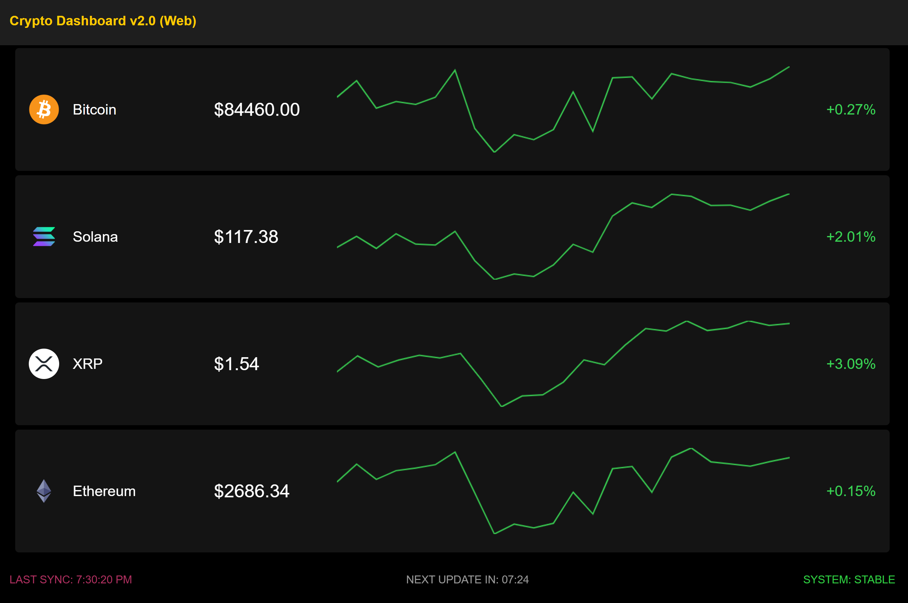
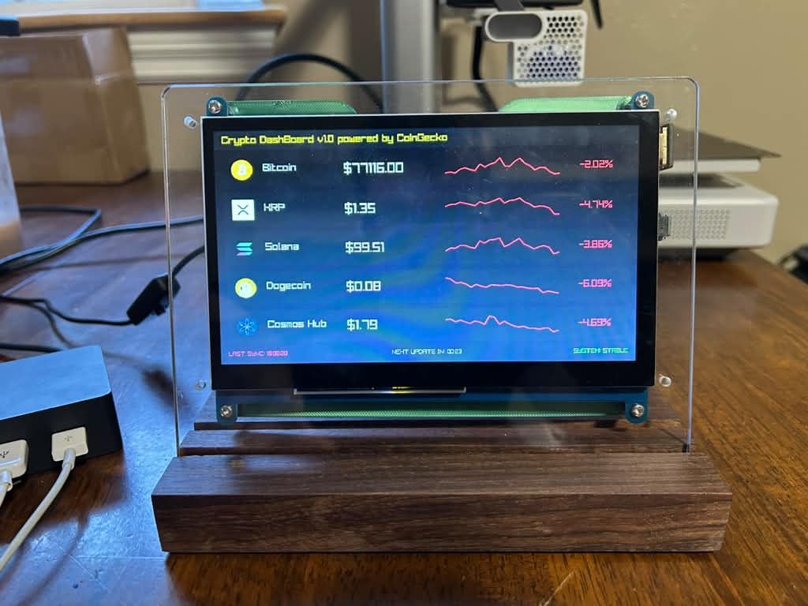
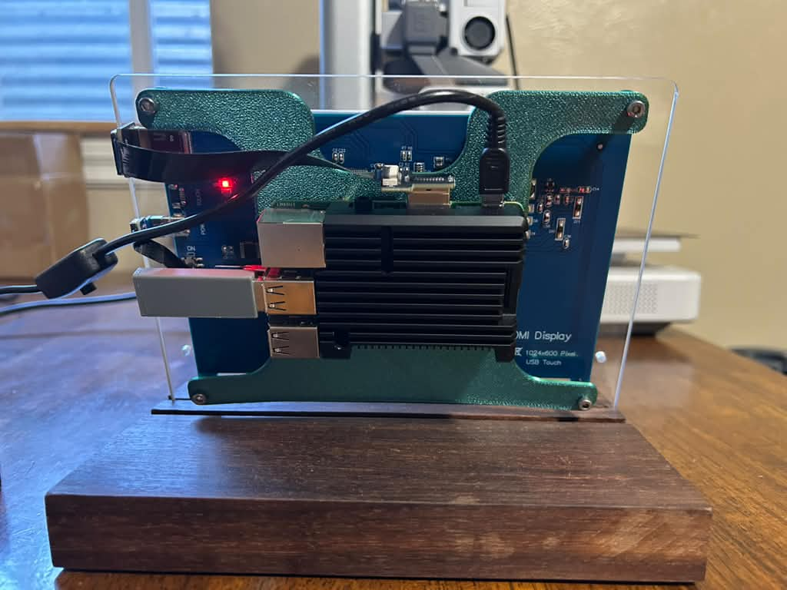

Projects
Personal projects I build on the side — mostly automation, APIs, and embedded hardware.
Market Ticker V2
A touchscreen stock and crypto price display built for a 2.8" ESP32 TFT board. Shows live prices with historical charts (1-day, 1-month or 1-year ranges), a four-symbol multi-asset dashboard mode, and touch controls for searching tickers, switching ranges, and adjusting theme, brightness, and timezone. Sets up over WiFi via a captive portal with a QR code, and persists settings across reboots.
Coinbase Day Trading Crypto Bot
A cloud-based, automated cryptocurrency trading bot deployed on AWS. It uses the Coinbase API to execute trades and CoinGecko for real-time market data, algorithmically reinvesting weekly APY earnings from USDC into selected cryptocurrencies. DynamoDB tracks trade history to monitor profits, losses, and overdue positions, and an email-to-SMS system sends real-time alerts for monitoring and debugging.
- Scheduled run starts
- Fetches market data and account balance
- Scores and selects coin candidates
- Reviews open positions and decides whether to sell
- Buys a new position if a good candidate is found
- Sends a summary alert
Montana Route Planner
A web app for planning drives along Montana's interstates (I-90, I-15, I-94) with National Weather Service forecasts along the route. I first built it as a LAMP app for CSCI 470, then rebuilt the backend in Go on PostgreSQL/PostGIS with Redis, all running in Docker. Highways, the state border, and points of interest are stored as real geometries. Routes are found with Dijkstra's algorithm, and NWS forecasts are cached in Redis, which took each weather checkpoint from about 600 ms to under 1 ms.
- Pick a start and end on the map
- PostGIS snaps both to the nearest highway
- Dijkstra finds the shortest route across the interstates
- Weather checkpoints are placed every 15 miles
- PostGIS finds the towns and passes along the way
- Forecasts load from Redis, or NWS on a cache miss
Embedded Crypto Market Dashboard V2
A complete rework of V1: instead of a dedicated Raspberry Pi, the whole dashboard now lives on a Seeed XIAO RP2040 that plugs into any Windows or Linux computer. The chip shows up as both a USB drive and a keyboard, types the command that launches the dashboard fullscreen in the host's browser, and closes it again when unplugged. Nothing is installed on the host. The dashboard is a touch-friendly HTML/JS page showing live prices, 24-hour changes and sparkline charts for crypto (CoinGecko) and stocks (Yahoo Finance). Tap a row to search for a new coin or ticker with an on-screen keyboard; the choice is sent to the chip over Web Serial and saved, so it travels with the device. Housed in a custom 3D-printed case.

Embedded Crypto Market Dashboard V1
A real-time cryptocurrency dashboard in C++ built to run on a Raspberry Pi with a dedicated HDMI display. Fetches live and historical price data from the CoinGecko API, processes and normalizes time-series data, and renders a graphical interface with Raylib — showing live prices, 24-hour changes, historical graphs, and system health. Built with a modular architecture, mock data support, image caching, and multithreaded API access to respect rate limits.

